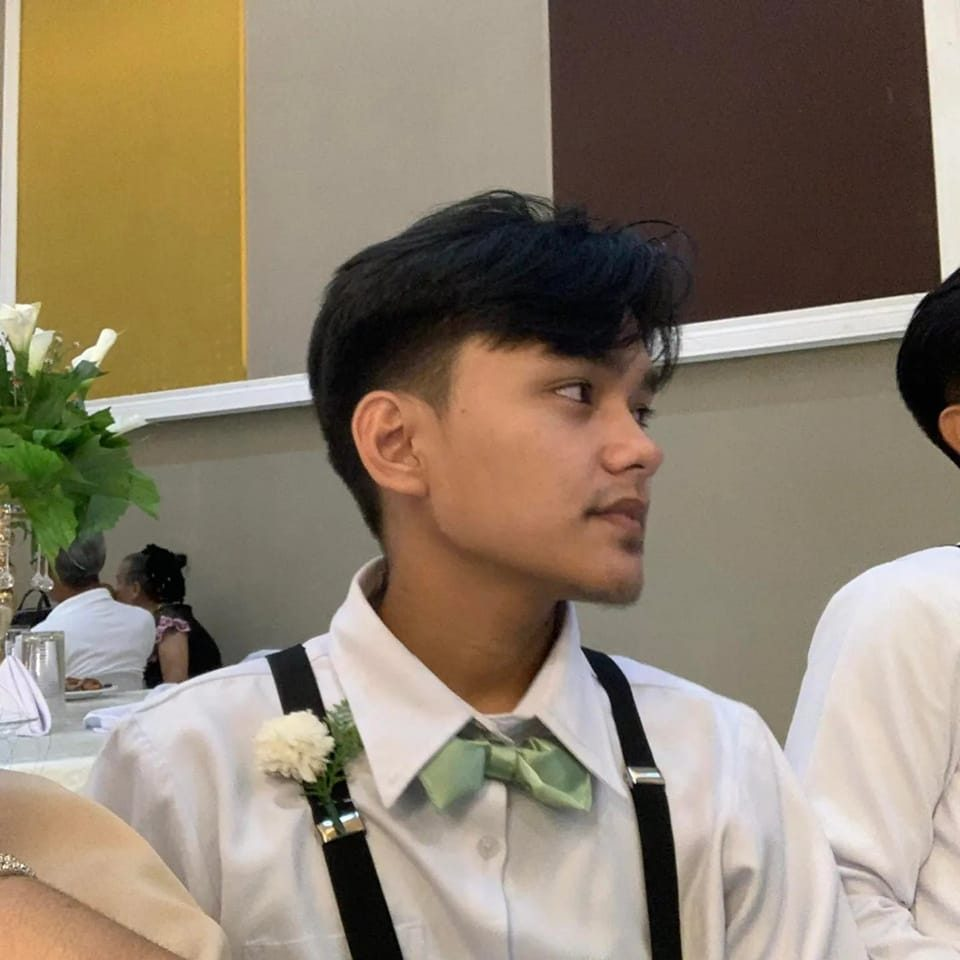
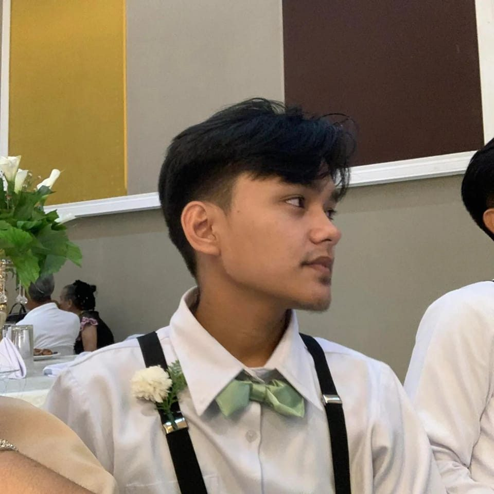

HI EVERYONE! IM
JIAN STEVE ENAD ABCEDE
Hiii!!! I am Jian Steve Enad Abcede, the second child of the five siblings. I was born on July 18, 2004.
I live in Don Carlos, Bukidnon, on the P-5 Norte Sayre Highway. My weight is 60 kg, and my height is 5'6.
I am currently studying
at Bukidnon State University, taking a BSIT course in my first year.
DISLIKE
•I DONT LIKE SMOKE
•I DONT LIKE NOISY
•I DONT LIKE TOXIC PERSON
•I DONT LIKE CROWDED PLACES
•I DONT LIKE CATS
LIKES
•I LIKE BEING ALONE
•I LIKE QUITE PLACE
•I LIKE BONDING WITH MY FRIENDS
•I LIKE LISTENING PODCAST
•I LIKE NATURE
HOBBIES
•Playing Badminton
•Playing Online Games
•COOKING
How Do I See Myself 10 Years from Now
The way I see myself ten years from now is not something I often think about. To be honest, it scares me a little to know that in one short decade I will be twenty-nine years old and that my years of youth are coming to an end. A vision
I’ve always had of myself years ahead of now is to be successful in my work, have a stable business that owns an animal farm, and have a healthy family. By the time I turn 29 in 2033, I will travel with my family around the world,
visiting dozens of countries and known places of incredible beauty.